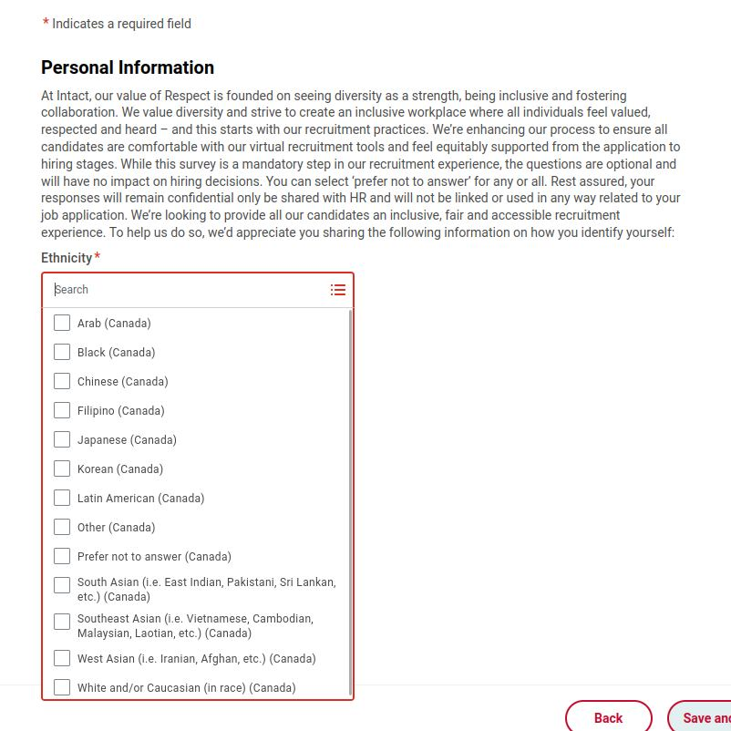
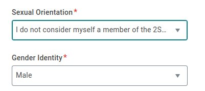

Hidden Discrimination in Canada's Job Market
2025-03-05
The Job Market in Canada: An Absurd Process
The job market in Canada is becoming increasingly complicated and frustrating for job seekers. Just to apply at Dollarama, you must go through their website as they no longer accept resumes in person. Then, you need to scan a QR code (which is not the safest method), install a mobile application (even less secure), create an account by providing personal information, fill out an application form, and finally, submit a resume... which contains the exact same information that was already entered manually! This process is inefficient and unnecessarily complicated. And all this just for a minimum-wage job!
A Discriminatory Practice Disguised as Bureaucracy
Even worse, during the application process, some companies ask questions about sexual orientation, ethnicity, and other criteria of sexist and racial discrimination. Since when is it acceptable to ask a candidate such things? Claiming that this information is necessary to evaluate a candidate is an admission of systemic discrimination!
In Canada, it is illegal for an employer to ask these questions during a job interview. These practices are explicitly prohibited by the Charter of Human Rights and Freedoms, adopted in Quebec in 1975, which bans discrimination based on ethnicity, sexual orientation, and other unfair criteria.
An Ignored Charter of Rights
Unfortunately, this charter continues to be ignored by many companies. Offering the option "Prefer not to answer" is not a sufficient solution—it is an answer in itself and does not justify the question. It follows the same logic as asking whether a person is vaccinated: those who respond "Prefer not to answer" are automatically assumed to be unvaccinated. This essentially forces a response.
 {kind=link}
{kind=link}
It is simply unacceptable to ask for a candidate’s skin color or sexual orientation in an online hiring process. This is an outrageous practice that should be abolished immediately. The job market in Canada needs transparency, not unnecessary bureaucracy and discrimination disguised as a diversity program.
These practices have unfortunately become the norm, explaining why some employers struggle to find workers while they themselves create obstacles in their own hiring process.